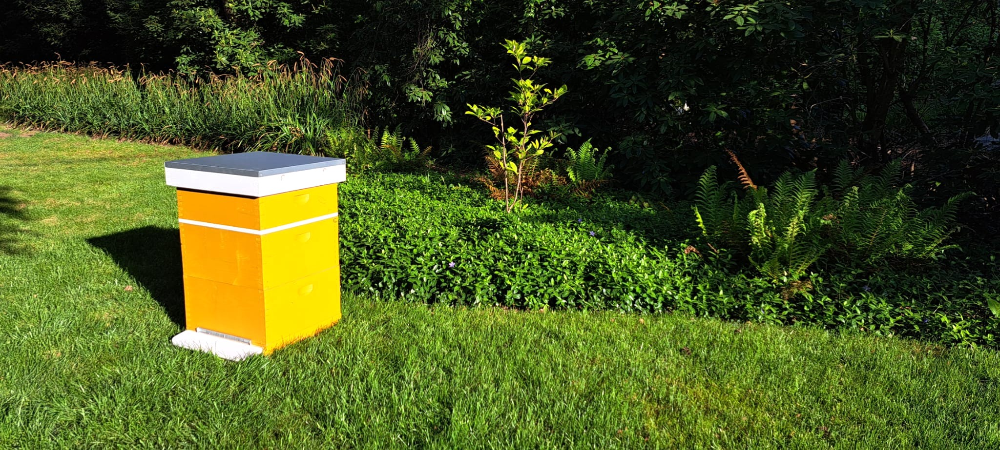

Nordic Beehive maakt handgemaakte Simplex bijenkasten in massief Douglas hout, afgewerkt in authentieke Zweedse kleuren. Kasten die uw tuin of bijenstand verrijken en waar u dag na dag van geniet.
Gecombineerd met doeltreffende bescherming tegen de Aziatische hoornaar, zodat uw bijen beschermd blijven en u gerust kunt imkeren.
Onze producten zijn ontworpen om gezien te worden en rust te brengen in hun omgeving — of het nu gaat om een bijenkast in uw tuin of een hoornaarval in uw bijenstand.
U bepaalt zelf de samenstelling, kleur en afwerking. Of het nu gaat om een bijenkast, een hoornaaroplossing of een combinatie — geen standaardpakket, maar een keuze die past bij uw situatie.
De voorbereiding van het houtwerk gebeurt in samenwerking met maatwerkbedrijf InterWest. De afwerking volgt handmatig in eigen atelier. Zo is Nordic Beehive zowel ambachtelijk als maatschappelijk verankerd.
Als actief imker ken ik de reële noden op het veld. De producten zijn ontwikkeld vanuit eigen ervaring, met bijzondere aandacht voor de uitdagingen die de Aziatische hoornaar vandaag stelt.
Tijdens een gezinsreis door Zweden in 2024 bleef één beeld me bij: houten gebouwen in warme tinten, verspreid in het landschap en volledig in harmonie met hun omgeving. Die rust en dat buitenleven zorgden ervoor dat je opnieuw leert genieten van de kleine dingen.
Ik ben Maarten Simpelaere, hobby-imker en gepassioneerde klusser. Beiden kwamen samen in een simpele gedachte: wat als je de esthetiek van dat Zweedse buitenleven vertaalt naar de bijenkast? Waarom zou een kast puur functioneel moeten zijn, terwijl ze net zo goed een object van schoonheid kan worden?
Tegelijk werd ik, net als veel imkers, geconfronteerd met de toenemende druk van de Aziatische hoornaar. Als lid van De Koninklijke Vrije Bie zie ik dagelijks hoe groot de impact is op bijenvolken. Daarom biedt Nordic Beehive ook praktische beschermingsoplossingen, haalbaar en vanuit de praktijk ontwikkeld.
De houtbewerking gebeurt in samenwerking met InterWest, een maatwerkbedrijf dat instaat voor de voorbereiding van het hout. Zo is Nordic Beehive niet alleen ambachtelijk, maar ook een sociaal gedragen project.
Kies uw bijenkast en beschermingsoplossingen via onze configurator.
Naar de configurator